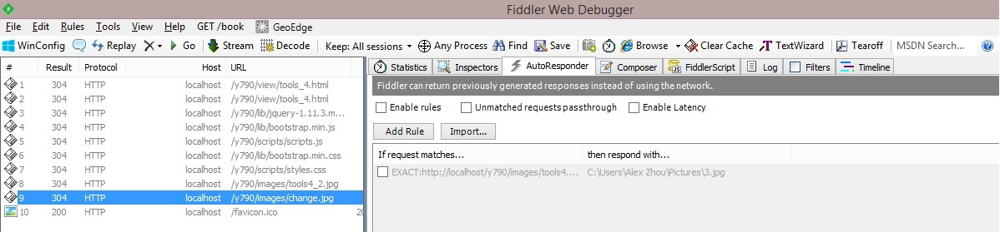

After the essential web browser, the most useful item in your toolkit when attacking a web application is an intercepting proxy.Over the years, the humble intercepting proxy has evolved into a number of highly functional tool suites, each containing several interconnected tools designed to facilitate the common tasks involved in attacking a web application.Several testing suites are popular: Fiddler, Burp Suite, WebScarab, Paros, Zed, Attack Proxy, Andiparos, CAT, Charles.
Fidder is one of the most popular one, it is kind of like the developer tools network, but much more powerful with plenty features. When you are running Fiddler, monitors all the internet sessions you are running and shows the request and response details.
One of the cool feature of Fidder is AutoResponder. It enable fidder to respond to requests using local offline content, instead of actually going out to hitting the server.
You can download Fidder4 from Here.
You will see screen shot like this:
Your task in this lab is to use the AutoResponder feature of Fiddler. You can use AutoResponder to replace the image below with an image from your local machine.
Refresh the current page, then go to Fiddler. Find the session with url /images/change.jpg, open the AutoResponder tab on the right side of Fiddler. Then check to enable "Enable rules". Drag and drop the session of /images/change.jpg to the filed under the AutoResponder field. Then at the bottom you can see "Rule Editor", select the second dropdown menu and "Find a file" to select an local image, use any image from you local machine as you like. Click "Save" to save the changes. Refresh the page on the browser, then you can see the original image has been replaced by your local image!

Fidder can be used for many functions, for example, web debugging ,performance testing, HTTP/HTTPS traffic recording, web session manipulation, security testing, etc. You can find more info at http://www.telerik.com/fiddler or watch youtube tutorials.